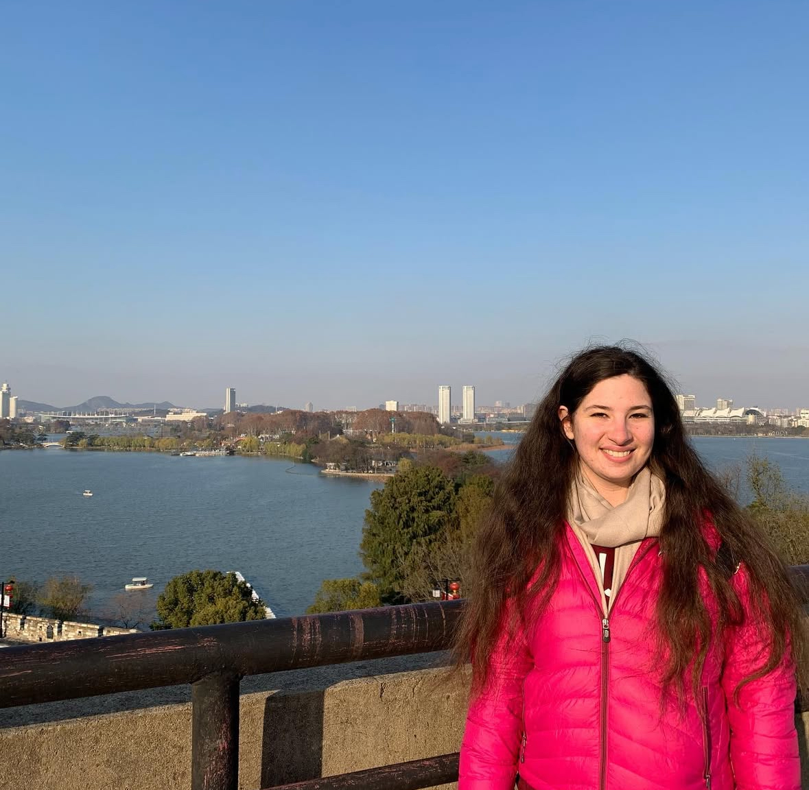
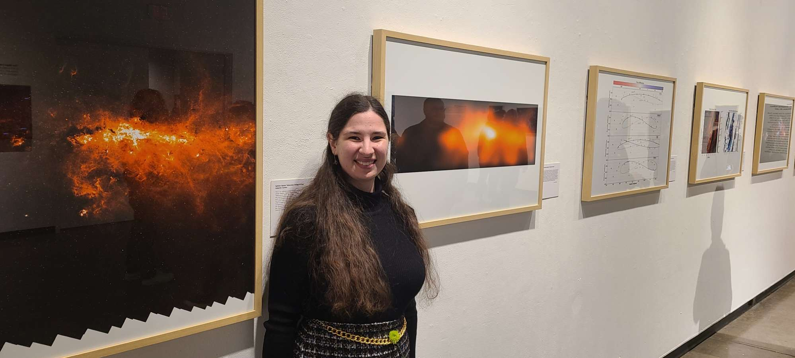
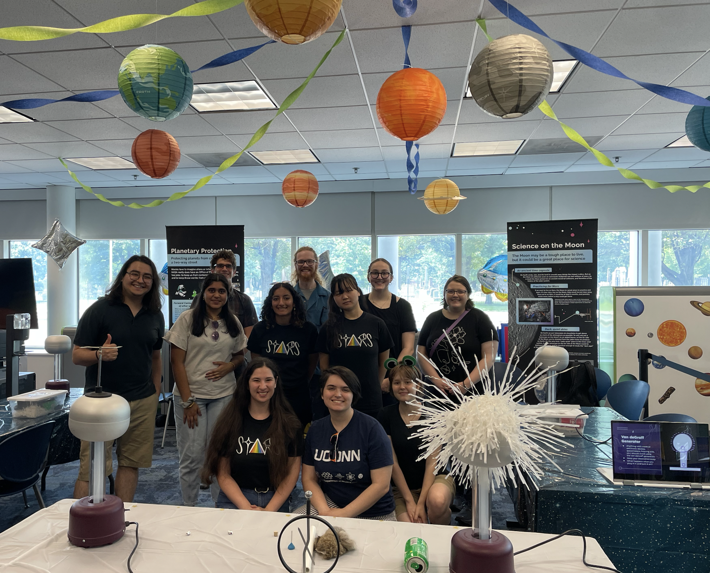

Outreach and Science Communication
Science and technology nowadays are advancing rapidly, in large part because of public interest, use, and investment in discovery and development. I spent much of my career as a junior scientist both searching for ways to share my science with the general public and developing programs to help others do the same. I believe it is our responsibility as scientists to give back our knowledge to the public, and adapt our skills and tools to give back to the broader community.
Here are some of my outreach highlights and recommended resources for those who wish to do the same!

A view from Nanjing, China.
Science Communication Across Cultures
In 2019, I was awarded a Fulbright Study/Research award to study the motiviations and perceptions of university faculty paritcipating in science communication initiatives in China. The infrastructure for science communication looks very different in other parts of the world. However, I was inspired by the fact that regardless of culture, many scientists feel an inherent obligation and motivation to share their knowledge with the public. It is up to us to create systems that encourage and support science outreach for all ages and levels. Doing so inspires new ideas and future generations to contribute to our growing understanding of the world and the universe.
Astronomy on Tap (Storrs)
I was one of the founding members of the Storrs satellite series for Astronomy on Tap, a program which hosts monthly science talks for the general public at local breweries or bars. Astronomy on Tap is an international initiative, encouraging scientists to interact with the public in an easily accessible, low stakes environment such as a brewery. AoT is a fantastic way to get involved in local communities, and an incredible opportunity for young researchers to develop public speaking skills.

My work was included as part of an incredible art exhibit called “To Order the Days/Para Ordenar Los Días” by Genevieve de Leon at the University of Hartford in March 2023.
Understanding Science Through Art
Science is an inherently creative endeavor, especially in astronomy. We constantly seek to answer questions that are much larger than ourselves. Envisioning our place in the universe would be an impossible task without inspiration, innovation, and art. Various cultures both modern and ancient viewed the sky as a canvas and history as a story. Whether through writing, painting, song, or dance, I truly believe that science wouldn't be possible without humanities and the appreciation of the human mind.

I participated as a co-lead in the UConn Science Technology and Astronomy Recruits (STARs) program led by Dr. Cara Battersby.
Teaching Science Communication for the Future
Science communication is a skillset that requires training and practice. I was fortunate as an undergraduate student at the University of Iowa to have access to a plethora of opportunities and resources which helped me hone my communication skills, as well as develop my own philosophy towards outreach. I led physics demonstration shows and hosted electronics workshops for children, and put on multi-disciplinary science trivia competitions to bridge the gap between different fields. I also participated in programs like the Latham Science Engagement Fellowship which seek to teach young researchers how to present their work to a variety of audiences and help fellows design multiple outreach programs within a year.
Encouraging and preparing others to share their science knowledge is very important to me as a junior researcher. Programs like UConn STARs which promote professional develop and coordinating outreach programs with k-12 schools are the perfect opportunities for young scientists to cultivate their communication skills.
I am always looking for new ways to connect science with the public and inspire more people become fascinated by the world around us. If you have ideas, or concepts, or just the burning desire to do the same, please reach out! I have plenty of resources and experiences to share.